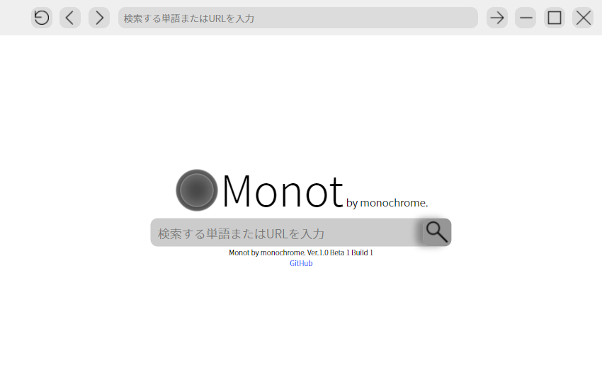
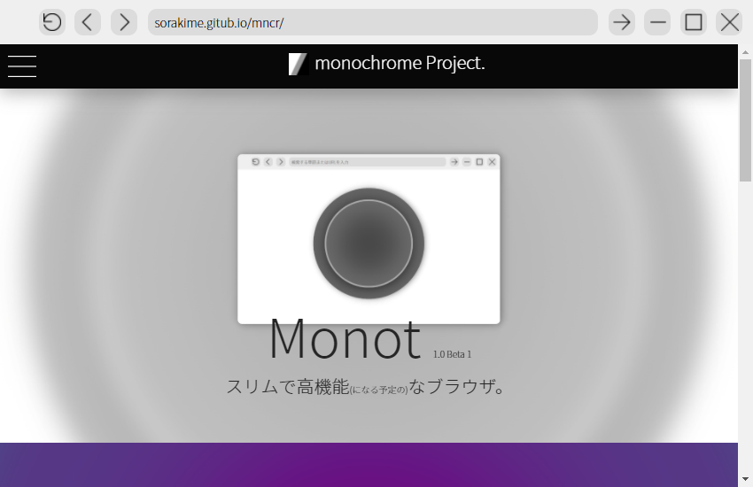

monochrome Project.からの新しいウェブブラウザです。
現在はタブが実装されていないですが、Beta 2では実装される予定となっています。
Edgeよりも約50%薄いメニューバーに美しいボタンのアイコン。余裕のあるデザイン。かつてないほどのウェブ体験をお楽しみいただけます。
また、現在はWindows用のパッケージのみが提供されていますが、将来的にはmacOS向けやLinux向けのパッケージも提供する予定です。
- 【ベータ2開発状況】
現在は、ベータ2が35%完成しています。タブの見た目側、アドレスバーの自動更新、軽量化といった修正が完成しています。
また、ベータ 2を公開する段階ではタブも実装する予定です。
正式バージョンが公開される頃には、ブックマークまで実装される予定です。
同期機能的なのは、まぁバージョン3くらいやろ()
| 名前 | Monot by monochrome. |
| 開発者 | Sorakime |
| ビット | 64ビット |
| バージョン | |
| プラットフォーム | Windows |
| ビルド番号 | 1 |
| 公式サイト | https://sorakime.github.io/mncr/projects/monot/ |
| 著作権 | Copyright 2021 Sorakime all rights reserved. |
| リポジトリ | https://github.com/Sorakime/monot/ |